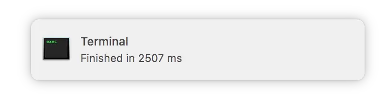

Fish: notify me when you finish

Have you ever been in a situation when you called git fetch, stared at the screen for several seconds and then switched to the browser to read something ‘useful’ while git fetches updates? And in five minutes you’re like ‘Oh wait, I was doing something important, no?’. Rings the bell, doesn’t it?
At some point in my life1, I decided to fix it. The idea is to send a notification whenever fish completes executing a long-running command. It is part of my configurations for a long time and I decided to share it more openly only now. Shame!
Fish already exposes variable CMD_DURATION which returns the duration of previous command execution in milliseconds. So it’s easy to hack a solution that we can put into fish_prompt function.
function __d12_prompt__check_duration
if test $CMD_DURATION
if test $CMD_DURATION -ge $cmd_notification_threshold
__d12_prompt__on_duration_exceeded $CMD_DURATION
__d12_prompt__notify_completion $CMD_DURATION
end
end
set CMD_DURATION 0
end
function __d12_prompt__on_duration_exceeded -a duration
set_color $fish_color_command
echo -esn ' ~> duration: '
set_color $fish_color_param
echo -es $duration ' ms'
set_color normal
end
function __d12_prompt__notify_completion -a duration
if command -v terminal-notifier > /dev/null
echo -es 'Finished in ' $duration ' ms' | terminal-notifier
end
end
Just call __d12_prompt__check_duration at the very beginning2 of fish_promt. Then set the value of cmd_notification_threshold to the minimal amount of milliseconds before notification is sent. Good place for setting that value is config.fish.
Good luck, and don’t procrastinate too much.
- S. Current implementation of
__d12_prompt__notify_completiontargets macOS users. Make sure you modify it so it works well on your system as well.